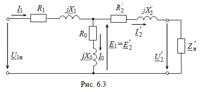

7.2.2.3. Полная схема замещения приведенного трансформатора
На рис. 7.3 представлена полная электрическая схема замещения трансформатора с элементами: R1 и X1 - активное и индуктивное сопротивления первичной обмотки; R'2 и X'2 - приведённые к числу витков первичной обмотки активное и реактивное сопротивления вторичной обмотки; Rсm = R0 - активное сопротивление, соответствующее магнитным потерями в стали; Xсm = X0 - индуктивное сопротивление, обусловленное основным магнитным потоком Ф.
